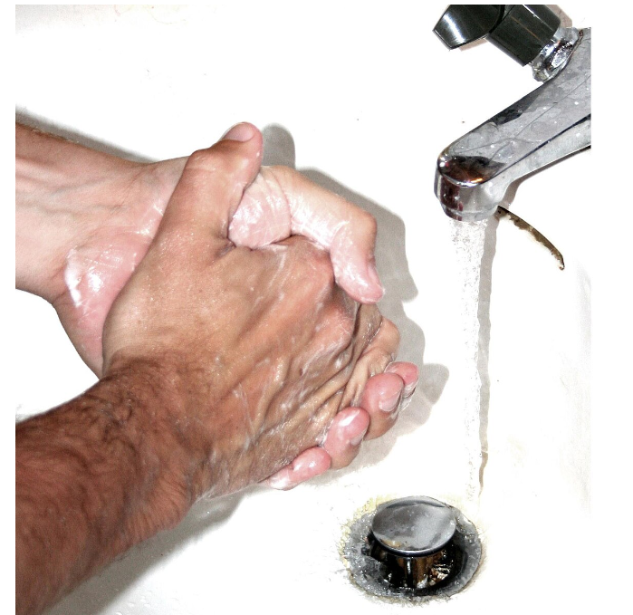
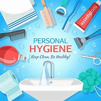

HYGIENE AND DISEASES PREVENTION
meaning of hygiene
is a set of practices performed to preserve health.according to the world health organizatio(WHO) "HYGIENE refers to condition and practices that help es"to mantain health and prevent the spread of diseases
meaning of personal hygiene
refers to maintaining the body's cleanliness.
This initiative focuses on the importance of hygiene practices in preventing the spread of diseases. We aim to educate and empower communities to adopt preventive measures and live healthier lives.
hygiene activities can be grouped into the following: home and everyday hygiene, personal hygiene, medical hygiene, sleep hygiene and food hygiene.
meaning of diseases prevetion
refers to actions taken to reduce the likelihood of developing diseases or to stop diseases from spreading. It can be done at the individual, community, or population level and generally includes a combination of healthy habits, vaccination, early detection, and public health measures.
There are three main levels of disease prevention:
Primary prevention:This aims to prevent disease before it happens. It includes actions like vaccinations, healthy lifestyle choices (e.g., good nutrition, regular exercise), avoiding tobacco and excessive alcohol use, and reducing exposure to environmental hazards.
Secondary prevention:This focuses on detecting diseases early, often before symptoms appear, so they can be treated more effectively. Screening tests, such as mammograms, blood pressure checks:
Tertiary prevention:This involves managing and mitigating the effects of a disease after it has been diagnosed. It aims to improve quality of life and prevent complications. Examples include rehabilitation programs, pain management, and ongoing care for chronic diseases.
Examples of personal hygiene practices
The following the Examples of personal hygiene practices
Handwashing:Regularly washing hands with soap and water to prevent the spread of germs.
Brushing Teeth:Brushing your teeth at least twice a day to maintain oral hygiene
Showering/Bathing:Cleaning the body daily to remove dirt, sweat, and bacteria
Washing Hair:Regularly shampooing and conditioning your hair to keep it clean.
Nail Care:Keeping nails trimmed and clean to prevent the buildup of dirt and bacteria
Oral Care:Flossing and using mouthwash to complement brushing and ensure fresh breath.
Example of hand washing
The following is example of hand washing practice

Example of hygiene tools

How to prevent infections
The following are the A few simple precautions can help you avoid getting sick with an infectious disease
Infections are caused by microscopic organisms known as pathogens—bacteria, viruses, fungi, or parasites—that enter the body, multiply, and interfere with normal functions. Infectious diseases are a leading cause of illness and death in the United States and around the world. For certain people--particularly those with underlying illnesses like heart disease or cancer, those who have serious injuries, or those who are taking medications that weaken the immune system—it's more difficult to avoid getting sick with an infection. Living in an affluent country like the United States, the threat we face from deadly viruses, bacteria, and parasites can seem remote, but these infectious microbes are ever present among us, according to Dr. Michael Klompas, writing in the Harvard Medical School Special Health Report Viruses and Disease. Dr. Klompas is an infectious disease specialist at Harvard-affiliated Brigham and Women's Hospital. However, for most healthy people, following a few basic principles can go a long way in helping to prevent infections.
Understanding how infections are transmitted can help you avoid getting sick
Good hygiene the primary way to prevent infections
Practice good food-safety techniques to avoid getting sick
Vaccinations are essential if you are to avoid getting sick
Take travel precautions